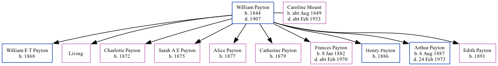

William Payton 1844 - 1907
[ Home ] | [ Calendar ] | [ Surnames Index ] | [ Family History ], William Payton, the husband of Caroline Mount (the first cousin four-times-removed on the mother's side of Nigel Horne), was born in Sittingbourne, Kent, England in 18441had 10 children, William E T, Ada, Charlotte H, Sarah A E, Alice M, Catherine J, Frances Louisa, Henry G, Arthur Albert and Edith D.
Throughout his life, he lived in Herne, Kent, England on Apr 3, 18811; and in Hampton, Kent on Apr 5, 18912.
He died in 1907.
Children
- William E T was born in 1868
- Charlotte H was born in 1872
- Sarah A E was born in 1875
- Alice M was born in 1877
- Catherine J was born in 1879
- Frances Louisa was born on Jan 8, 1882
- Henry G was born in 1886
- Arthur Albert was born on Aug 6, 1887
- Edith D was born in 1891
Citations
- 1881 England, Wales & Scotland Census - Findmypast (was age 35 and the head of the household)
- 1891 England, Wales & Scotland Census - Findmypast (was age 50 and the head of the household)
Family Tree
Generated by Ged2Site. Last updated on Jul 20, 2025